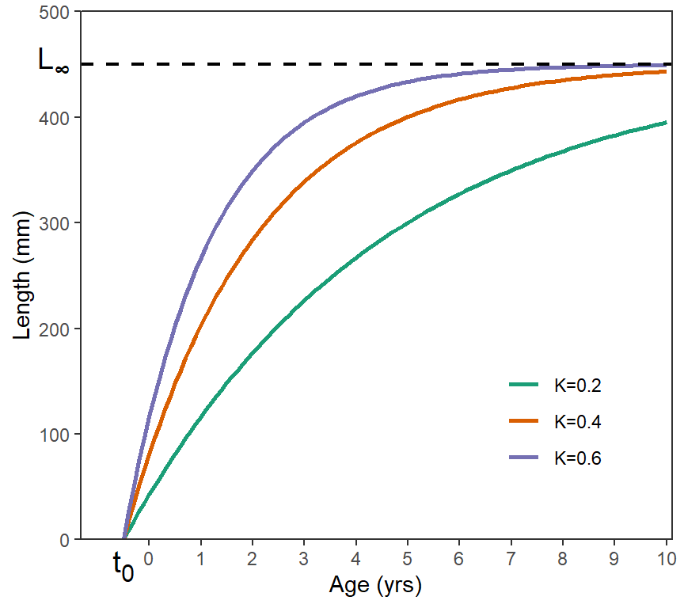
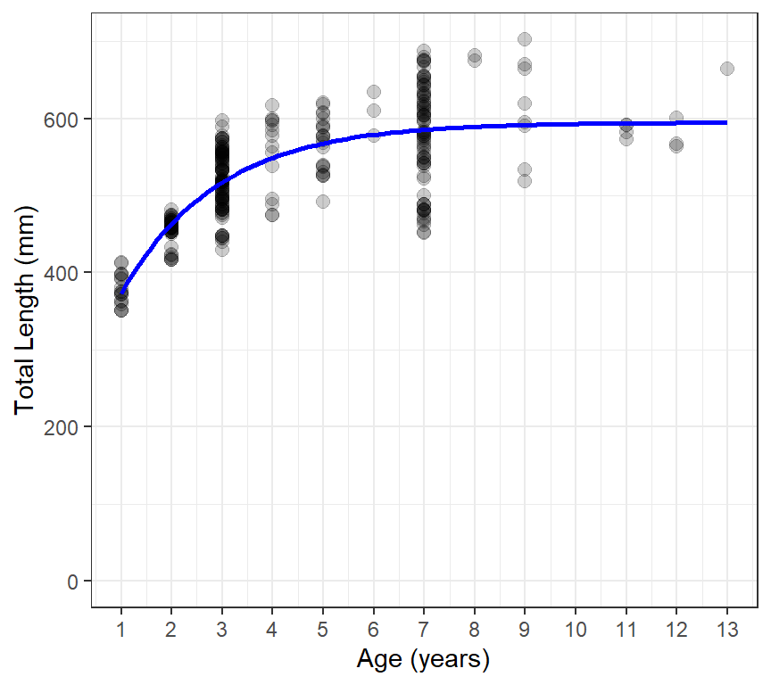

Warning
This is a work-in-progress.
Introduction
Fish growth, defined as the change in body size (either length or weight) over time, is critically important in the management of fish populations. For example, fish in populations that exhibit fast growth may be managed with higher length limits, whereas those where growth is slow (i.e., the fish are stunted) may warrant a relaxation of length limits in an attempt to decrease the size of the population to limit intraspecific competition in hopes of increasing growth. Thus, understanding fish growth is an important component of simulating management actions with the yield-per-recruit (YPR) and dynamic pool (DPM) models implemented in rFAMS.
Fish growth is modeled in rFAMS as the change in length over time, as indexed by age. Ultimately length will be used to estimate weight in the yield models through the weight-length relationship discussed here. There are many functions available to model fsih growth, but only the traditional von Bertalanffy function is used in the YPR and DPM models in rFAMS.
The purpose of this article is to briefly describe the von Bertalanffy growth function (VBGF), briefly show how to model growth with the VBGF in R, and show how to extract the necessary growth-related parameters for use in the YPR and DPM models in rFAMS.
The following packages are used in this article.
von Bertalanffy Growth Function
There are a larger number of functions that can be used to model fish growth, including the VBGF, Gompertz, logistic, Schnute, Schnute-Richards, and Richards functions.1 Of these, the VBGF is by far the most common, though some have argued that it is not adequate or appropriate for this purpose. Regardless, the VBGF has a long history of use for modeling fish growth and has been implemented into many synthetic models, including the YPR and DPM models implemented in rFAMS.
Many versions of the VBGF, called parameterizations,2 are available. These parameterizations, and the other growth models mentioned above, are thoroughly reviewed in the “Growth Estimation” chapter of this book. The most commonly used parameterization, and the one required by rFAMS, is the “traditional” VBGF proposed by Beverton and Holt (1957);
$$ L_i=L_\infty\large[1-e^{-K(t_i-t_0)}\large]+\epsilon_i \qquad(1)$$
where and are the observed length and age of the th fish, is the asymptotic mean length, is the “Brody growth coefficient” that describes how quickly the mean length approaches , and represents the theoretical age where the mean length would be 0, and is an additive “error” term that represents how the th individual varies from the model. The VBGF represents growth that is very quick (i.e., steeply ascending) at young ages, slows (i.e., begins to flatten out) at middle ages, and slows further as it approaches an asymptote at older ages (Figure 1).

There are several aspects of the VBGF that are often confused. First, the VBGF, as with most growth models, represents the average length at a given age. In other words, individual fish would be points that would be scattered around one of the VBGF lines shown in Figure 1. One ramification of this is that is the asymptote for the mean length, not individual lengths. Thus, is not an esimate of the maximum length of individual fish but, rather, an estimate of the maximum mean length of fish in the population. Second, , is the so-called “Brody growth coefficient” but it does not represent growth in a true sense of the word. The units of are the inverse of time (e.g., years-1) rather than units of length divided by units of time. does represent how fast the mean length-at-age approaches , with approached more quickly for larger values of (Figure 1). So, represents the rate of growth but it is not an actual measure of any specific type of growth rate. Third, is the x-intercept of the VBGF and a modeling artifact that is required to “anchor” the left side of the VBGF so that the VBGF best represents the available data (which is often not extensive for young fish). One should not try to interpret a biological meaning for . Fourth, all three parameters of the VBGF are highly correlated, which means that several combinations of , , and may produce very similar VBGF trajectories.3
The YPR and DPM models in rFAMS require estimates of , , and to simulate yield from the fish population. Methods for estimating these parameters from observed data are described in the next section.
Fitting von B in R
Finding values for the parameters that result in the “best-fit” of the VBGF is more complicated than, for example, fitting a simple linear regression. This complication is caused by having to use non-linear model fitting methods that rely on algorithms that search for the best-fit parameters (rather than having closed-form mathematical equations that produce the best-fit values), the often “messy” length-age data in many samples (e.g., few small fish, few old fish), and the inherent variability in length-age data for many populations (i.e., high variability in lengths of fish of the same age). Working with and, at times handling, these issues is comprehensively discussed in the “Growth Estimation” chapter of this book, but will not be discussed further here.
The data required for modeling growth with the VBGF are the length (in mm for rFAMS) and age (in whole number years for this model in rFAMS) of individual fish at the time of capture. The length and age of Walleye from Lake Erie are stored in WalleyeErie2 in the FSAdata package and will be used as an example here. These data are obtained and the first few rows examined below. Note that lengths and ages are in tl and age, respectively.4
data(WalleyeErie2,package="FSAdata")
head(WalleyeErie2)
#> setID loc grid year tl w sex mat age
#> 1 2003001 1 940 2003 360 460 male mature 2
#> 2 2003001 1 940 2003 371 571 male mature 2
#> 3 2003001 1 940 2003 375 507 male mature 2
#> 4 2003001 1 940 2003 375 584 male mature 2
#> 5 2003001 1 940 2003 375 537 male mature 2
#> 6 2003001 1 940 2003 376 553 male mature 2For our purposes, fish from one location (i.e., 3) and year (i.e,. 2010) will be isolated using filter() from dplyr. These data are stored in the new data.frame waeredux.
waeredux <- WalleyeErie2 |>
dplyr::filter(loc==3,year==2010)The VBGF is a non-linear function that requires using non-linear regression techniques to estimate model parameters that provide a best-fit to data. Most non-linear regression equations use an algorithm to efficiently search for these values through minimimizing an error sum-of-squares or maximizing a likelihood. Most of these algorithms must be provided with a starting point for their search.
The findGrowthStarts() function in FSA can be used to provide “good” starting values for many growth functions, including the traditional VBGF. The findGrowthStarts() function requires a formula of the form length~age as the first argument and a data.frame with those variables in data=. The function defaults to using the traditional VBGF so no further arguments are required. The result should be assigned to an object for further use below.
gstrts <- FSA::findGrowthStarts(tl~age,data=waeredux)
gstrts # starting values, not the best-fit values
#> Linf K t0
#> 623.252339 0.431295 -1.130975Before continuing to the non-linear regression function in R, an R function that contains the mathematical function to be used (i.e., the VBGF) must be created. This can be done manually, but makeGrowthFun() from FSA can be used to more easily create many growth functions. No arguments are required by makeGrowthFun() to construct an R function for the traditional VBGF, because the traditional VBGF is the default for makeGrowthFun().
vbfun <- FSA::makeGrowthFun()
vbfun
#> function (t, Linf, K = NULL, t0 = NULL)
#> {
#> if (length(Linf) == 3) {
#> t0 <- Linf[[3]]
#> K <- Linf[[2]]
#> Linf <- Linf[[1]]
#> }
#> Linf * (1 - exp(-K * (t - t0)))
#> }
#> <bytecode: 0x0000018d1edbe580>
#> <environment: namespace:FSA>The code in this function looks complicated but the last line before the } shows the right-hand-side of Equation 1. Thus, this function returns a mean length given the values of t (i.e., age), Linf, K, and t0 (as shown in the top line of the function).
vb1(3,Linf=450,K=0.4,t0=-0.5) # mean length at age-3
#> [1] 339.0314
vb1(3:6,Linf=450,K=0.4,t0=-0.5) # mean lengths at age-3 to age-6
#> [1] 339.0314 375.6155 400.1386 416.5769The most common function used to perform non-linear regression in R is nls(), which is provided with base R. For this purpose, nls() requires a formula that has length on the left-hand-side and the specific growth function (e.g., vb1) with the specific age variable and model parameter names5 on the right-hand-side, the associated data in data=, and the saved starting values in start=. The result should be saved to an object.
resvb1 <- nls(tl~vbfun(age,Linf,K,t0),data=waeredux,start=gstrts)Estimated values for the parameters are extracted from the saved nls() object with coef().
coef(resvb1) # best-fit values
#> Linf K t0
#> 595.0451068 0.5233219 -0.8861433As mentioned previously, growth modeling in general, but also in R, can be much more involved then what is shown here. We recommend the “Growth Estimation” chapter of this book as a comprehensive resource for modeling fish growth in R. However, this demonstration from FSA and several fishR posts are also good resources for using R to model growth.
However, a quick method for using ggplot() to show the fitted VBGF against the observed data is shown below with the result in Figure 2.
ggplot(data=waeredux,aes(y=tl,x=age)) +
geom_point(size=2.5,alpha=0.2) +
scale_y_continuous(name="Total Length (mm)",limits=c(0,NA)) +
scale_x_continuous(name="Age (years)",breaks=1:14) +
stat_function(fun=vb1,args=list(Linf=coef(resvb1)),linewidth=1,color="blue") +
theme_bw()
Extracting Parameters for Use in rFAMS
Functions to perform the YPR and DPM modeling in rFAMS all take a list or vector that contains seven required life history parameters in the lhparms= argument6. Three of those required life history parameters are , , and .
makeLH() is a convenience function in rFAMS that takes user-provided values for the seven life history parameters, performs adequacy checks on each,7 and then puts the values into a properly formatted list (preferably) or vector.8 In its simplest usage, makeLH() has seven required arguments, one for each of the required life history parameters. Three of these arguments are Linf=, K= and t0= for the three VBGF parameters estimated in the previous section.
LH <- makeLH(N0=100,tmax=15,Linf=595.0451068,K=0.5233219,t0=-0.8861433,
LWalpha=-5.877308,LWbeta=3.341721)
LH
#> $N0
#> [1] 100
#>
#> $tmax
#> [1] 15
#>
#> $Linf
#> [1] 595.0451
#>
#> $K
#> [1] 0.5233219
#>
#> $t0
#> [1] -0.8861433
#>
#> $LWalpha
#> [1] -5.877308
#>
#> $LWbeta
#> [1] 3.341721A less prone-to-error method for entering the VBGF parameters is to give the object saved from nls() in the previous section to Linf= and not provide values to K and t0. makeLH() will extract the parameter estimates from the nls() object to put in the life history parameter list.
LH <- makeLH(N0=100,tmax=15,Linf=resvb1,
LWalpha=-5.877308,LWbeta=3.341721)
LH
#> $N0
#> [1] 100
#>
#> $tmax
#> [1] 15
#>
#> $Linf
#> [1] 595.0451
#>
#> $K
#> [1] 0.5233219
#>
#> $t0
#> [1] -0.8861433
#>
#> $LWalpha
#> [1] -5.877308
#>
#> $LWbeta
#> [1] 3.341721